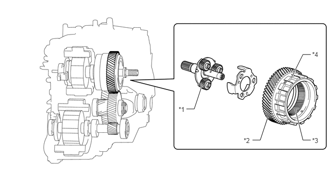

构造
通过行星齿轮机构传输的发动机动力输出分为直接传输至驱动轮的原动力和至发电机 (MG1) 用于发电的原动力。此外，发电机 (MG1) 旋转且发动机起动时，发电机 (MG1) 作为起动机运行。
作为动力分配行星齿轮机构的零件，太阳齿轮连接到发电机 (MG1) 上，齿圈连接到中间轴主动齿轮（输出）上且齿轮架连接到发动机上。
采用了集成有动力分配行星齿轮齿圈、中间轴主动齿轮和驻车锁止齿轮 3 个齿轮功能的复合齿轮。优化了热处理和加工工艺，确保高精度的同时实现了齿轮系的紧凑性并降低了噪音。

| *1 | 动力分配行星齿轮机构 | *2 | 中间轴主动齿轮（复合齿轮） |
| *3 | 行星齿圈 | *4 | 驻车锁止齿轮 |